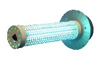

RGF's PHI-Cell™
The new patent-pending PHI-Cell by RGF is the latest advancement in Photohydroionization technology. RGF has developed a proprietary broad spectrum, high efficiency UIV bulb (HE/UV) to work with RGF's hydrated quad-metallic target and RGF's PPC-UV bulb coating, also a fiber optics quartz indicator light. The target acts as a catalyst for a hydroxyl radical reaction of the broad spectrum 100-300 nm HE/UV energy with water vapor on the hydrated target. The results are hydro peroxides, super oxide ions, passive negative ions hydroxides and ozonide ions. The cell creates a very aggresive advanced oxidation atmosphere that has the ability to reduce airborne bacteria, mold and viruses up to 99% also odors and VOC's by up to 97%. A proprietary protective poly shield (RGF PPS) shields the bulb from temperature fluctuations and breakage that could release mercury, which is a problem for all UV bulbs.

The new proprietary, high efficiency rated bulb has an estimated life of 25,000
hours, just short of three years. RGF is providing a three-year warranty with
the cell. The fiber optics indicator light can be used for remote monitoring.
RGF has successfully used its PHI-Cell in air, water, food and laundry
purification systems. The Chinese Government has tested the RGF PHI-Cell and
approved it for use in all government buildings and subways for SARS [virus]
protection.
For even more information, visit their website at: www.rfg.com